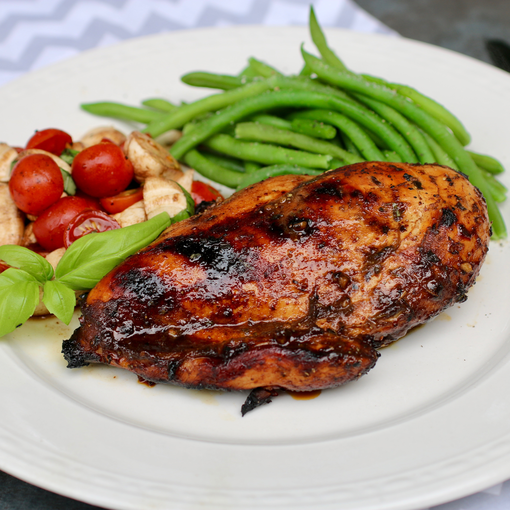

Home Page
Grilled Balsamic Chicken Breast

Description:
A delicious and easy way to make honey-balsamic grilled chicken breasts. It is perfect to add to your favorite salad or by itself with your favorite sides.
Ingredients:
- 1 cup balsamic vinegar
- ½ cup olive oil
- ½ cup honey
- 2 tablespoons Dijon mustard
- 4 cloves garlic, minced
- 2 teaspoons dried basil
- 2 teaspoons salt
- 2 teaspoons ground black pepper
- 4 boneless, skinless chicken breasts
Steps:
-
- Step
- Whisk together balsamic vinegar, olive oil, honey, Dijon mustard, garlic, basil, salt, and pepper in a small bowl.
-
- Step
- Combine chicken and 1/2 of the marinade in a resealable plastic bag. Marinate chicken for 1 hour to overnight. Reserve the other 1/2 of the marinade until grilling.
-
- Step
- Preheat an outdoor grill for medium-high heat, to approximately 400 degrees F (200 degrees C). Lightly oil the grate.
-
- Step
- Remove chicken from marinade and discard used marinade.
-
- Step
- Place chicken on the hot grill and baste with reserved marinade. Lower grill to medium and cook until chicken is no longer pink in the center and the juices run clear, 6 to 8 minutes per side. Baste with marinade on each side when flipping chicken. Chicken should reach an internal temperature of 165 degrees F (74 degrees C). Remove chicken from grill, cover, and let rest for 5 to 10 minutes before serving.
Credits: My Hot Southern Mess for publishing this recipe at all recipes